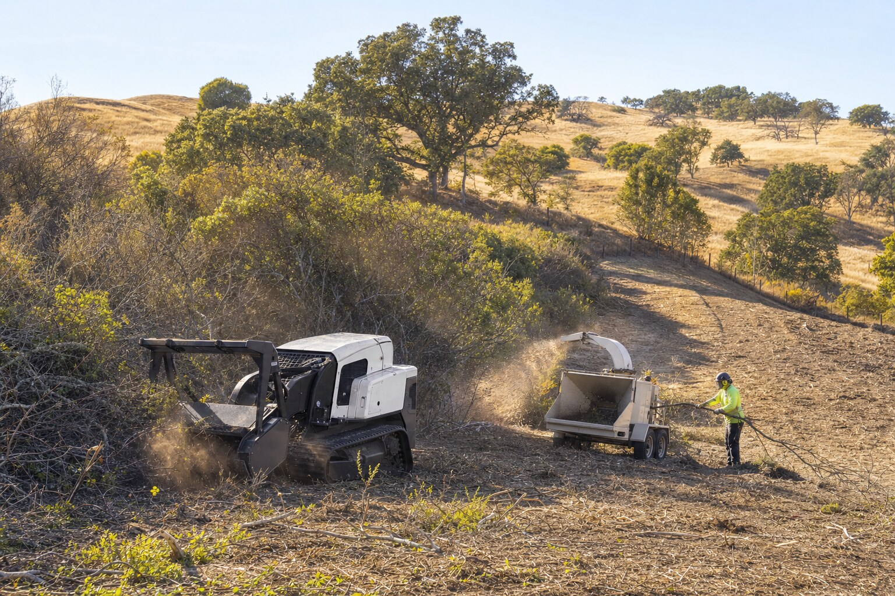
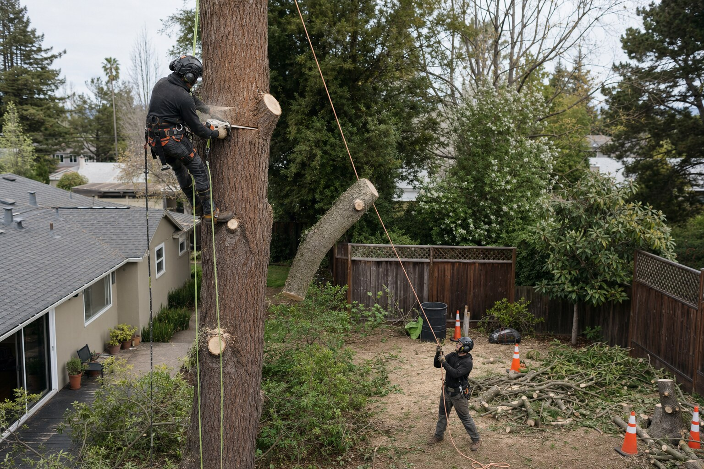

Bay Area tree service, city by city
From the South Valley to the Peninsula, we tailor tree care to each community's properties, access, and needs. Choose your city for local details.
Our service area covers seventeen Bay Area cities — from Gilroy and San Martin in the south, through San Jose, the West Valley, and the Santa Clara Valley, up the Peninsula to San Mateo. Don't see your city? Ask us — our radius may reach you.

Gilroy, CA
Gilroy sits at the south end of Santa Clara Valley, where suburban streets give way to larger lots, ranch properties, and open land. That mix shapes the tree care we do here.
Gilroy tree service
Morgan Hill, CA
Morgan Hill blends established residential neighborhoods with hillside homes and semi-rural properties. Tree care here often means balancing views, slopes, and mature canopy.
Morgan Hill tree service
San Jose, CA
San Jose spans dense urban neighborhoods, sprawling suburbs, and commercial districts. Tree care here ranges from tight-access backyard removals to portfolio-wide property programs.
San Jose tree service
Saratoga, CA
Saratoga is known for its wooded, hillside setting and mature canopy. Tree care here leans toward preservation, careful pruning, and professional arborist judgment.
Saratoga tree service
Palo Alto, CA
Palo Alto's leafy streets and established properties reward precise, preservation-minded tree care. Expect careful pruning, documentation, and respect for the existing canopy.
Palo Alto tree service
Redwood City, CA
Redwood City mixes established residential neighborhoods with a busy commercial core on the mid-Peninsula. Tree care here spans everyday home work and business-property programs.
Redwood City tree service
San Mateo, CA
San Mateo's established Peninsula neighborhoods often pack mature trees onto compact lots. Careful pruning, clean removals, and tidy hedges are the everyday work here.
San Mateo tree serviceSan Martin, CA
San Martin's larger parcels, ranch properties, and country roads sit between Morgan Hill and Gilroy. Tree work here is as much about the land as it is about individual trees.
San Martin tree serviceMilpitas, CA
Milpitas runs from valley-floor neighborhoods and commercial parks up into the grassy East Bay foothills — a mix that shapes very different tree work.
Milpitas tree serviceSanta Clara, CA
Santa Clara spans established residential streets and large commercial campuses. We handle both the backyard oak and the property-wide program.
Santa Clara tree service
Campbell, CA
Campbell's established neighborhoods pack mature street trees, fruit trees, and hedges onto compact suburban lots. Precision and cleanup matter here.
Campbell tree service
Los Gatos, CA
Los Gatos properties climb from town lots into wooded hillsides of oaks and redwoods. Tree care here balances views, privacy, and wildfire awareness.
Los Gatos tree service
Cupertino, CA
Cupertino's tree-lined neighborhoods mix mature oaks, ash, and ornamentals on well-kept suburban lots, with busy commercial corridors nearby.
Cupertino tree service
Sunnyvale, CA
Sunnyvale's suburban blocks hold mature shade trees, backyard fruit trees, and plenty of palms — with commercial sites mixed throughout.
Sunnyvale tree service
Mountain View, CA
Mountain View pairs leafy residential streets with busy commercial and campus properties. Tree care here ranges from single-tree pruning to managed programs.
Mountain View tree service
Los Altos, CA
Los Altos is defined by large lots and a mature native canopy — heritage oaks above all. The work here leans toward preservation and careful judgment.
Los Altos tree service
Menlo Park, CA
Menlo Park's established Peninsula neighborhoods carry a significant mature canopy, including protected heritage trees. Careful pruning and documentation are the norm.
Menlo Park tree serviceWe may still serve your area
Our exact radius is being finalized. If you're near these cities, reach out and we'll let you know.
Ready for a free, no-pressure estimate?
Tell us about your trees and access. We'll help you plan safe, healthy tree care for your Bay Area property.